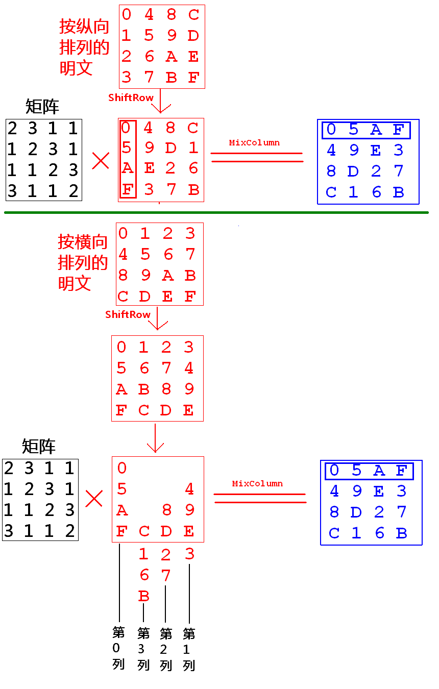

已实现的函数
aes_encrypt
1 | void aes_encrypt(unsigned char *bufin, unsigned char *bufout, unsigned char *key) |
- 第0轮只做
AddRoundKey，即matrix与key异或（加法） - 随后进入第1~
key_rounds轮循环，每次执行- 把
matrix中的16字节替换成sbox中的值 matrix行转列matrix循环左移- 做
MixColumn（如果是最后一轮不做乘法） - 做
AddRoundKey，即matrix与key异或（加法）
- 把

注. 2.2 + 2.3步（分割线上方、下方为不同的实现过程，最终采用上方的实现方式，即先行转列，再ShiftRow） ↩
MixColumn
1 | void MixColumn(unsigned char *p, unsigned char a[4], int do_mul) |
对p指向的$4\times4$矩阵$m$中的4列（注意，是列！）做乘法运算;
这里的乘法是指有限域$GF(2^8)$多项式模$(X^4+1)$乘法,具体步骤请参考教材p.61及p.62;
AES加密时采用的被乘数a为多项式$3*X^3 + X^2 + X + 2$, 用数组表示为
1
unsigned char a[4]={0x03, 0x01, 0x01, 0x02};
AES解密时采用的被乘数
a为加密所用多项式的逆, 即$\{0x0B, 0x0D, 0x09, 0x0E\}$;矩阵$m$中的4列按以下顺序分别与a做乘法运算:
- 第0列: 由
m[0][0], m[1][0], m[2][0], m[3][0]构成 - 第1列: 由
m[0][1], m[1][1], m[2][1], m[3][1]构成 - 第2列: 由
m[0][2], m[1][2], m[2][2], m[3][2]构成 - 第3列: 由
m[0][3], m[1][3], m[2][3], m[3][3]构成
- 第0列: 由
乘法所得4列转成4行, 保存到
p中, 替换掉p中原有的矩阵;do_mul用来控制是否要做乘法运算, 加密最后一轮及解密第一轮do_mul= 0;
AddRoundKey
1 | void AddRoundKey(unsigned char *p, unsigned char *k) |
ByteSub
1 | void ByteSub(unsigned char *p, int n) |
Problem Description (with Solution)
下载myaes.zip, 解压缩, 里面包含了vc6的工程文件MyAes.dsw, 双击打开, 可以看到MyAes.c;MyAes.c中部分函数的源代码已删除, 这些函数经编译后生成的机器码已转移到aes_lib.lib内。
这些已删除的函数包括:
1 | void build_sbox_inverse(void); |
请对本程序(MyAes.c)做以下修改:
- 重写上述函数
- 删除
#pragma comment(lib, "aes_lib.lib")
要求:
- 修改后的程序必须能正常编译运行
- 运行产生的输出结果与本程序一致
如果不想用VC6测试程序, 而是要在Linux系统下编程, 请执行以下命令进行编译、运行:
1 | gcc MyAes.c aes_lib.o -o MyAes |
待补全的函数及各自功能为：
已经补全
build_sbox_inverse
1 | void build_sbox_inverse(void) |
aes_polynomial_mul
1 | void aes_polynomial_mul(unsigned char x[4], unsigned char y[4], unsigned char z[4]) |
有限域$GF(2^8)$多项式乘法, 计算$z = x * y\mod (x^4 + 1);$
当被乘数为多项式$3X^3 + X^2 + X + 2$的4个系数$\{3, 1, 1, 2\}$时, 转化成矩阵为:
当被乘数为多项式$0xBX^3 + 0xDX^2 + 0x9*X + 0xE$的4个系数$\{0xB, 0xD, 0x9, 0xE\}$时, 转化成矩阵为:
乘数也是一个3次多项式, 它的4个系数保存在$y$中；
$x * y \mod (x^4 + 1)$的计算结果仍是一个3次多项式, 它的4个系数保存在$z$中.
ByteSubInverse
1 | void ByteSubInverse(unsigned char *p, int n) |
ShiftRowInverse
1 | void ShiftRowInverse(unsigned char *p) |
MixColumnInverse
1 | void MixColumnInverse(unsigned char *p, unsigned char a[4], int do_mul) |
把
p指向的$4\times4$矩阵$m$中的4行（与之前的MixColumn不同，是行！）逐行与矩阵a做乘法运算;这里的乘法是指有限域$GF(2^8)$多项式模$(X^4+1)$乘法;
被乘数
a为多项式$0xB X^3 + 0xD X^2 + 0x9 * X + 0xE$的4个系数, 即$\{0x0B, 0x0D, 0x09, 0x0E\}$, 展开为矩阵就是:矩阵$m$中的4行逐行与
a做乘法运算后, 按以下顺序转成矩阵$t$中的列:- 第0列: $a * m[0]$
- 第1列: $a * m[1]$
- 第2列: $a * m[2]$
- 第3列: $a * m[3]$
复制$t$到
p中, 替换掉p中原有的矩阵;do_mul用来控制是否要做乘法运算, 加密最后一轮及解密第一轮do_mul= 0;
aes_decrypt
1 | void aes_decrypt(unsigned char *bufin, unsigned char *bufout, unsigned char *key) |